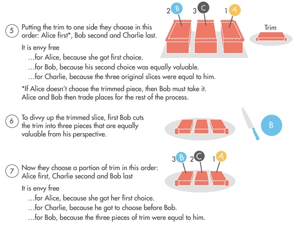

Data Ethics: Algorithmic Privacy and Scarce Resource Allocation
CDTO Campus 2024: Shaping the Digital Future
Jeff Jacobs
Georgetown Universityjj1088@georgetown.edu
Thursday, 8 August 2024
Hello!
My Goal
- I want to provide some tools from data ethics, for your toolbox
- If one of the tools is not relevant, I hope another will be!
- If one of the tools is very relevant, I can provide more resources (books, articles) for you!
Who Am I? How Can I Help You?
| üíª | üåè | |
|---|---|---|
| MS in Computer Science, Stanford University | → | PhD in International Relations, Columbia University |
| Assistant Teaching Professor, Data Science and Analytics | → | Courtesy Teaching Professor, McCourt School of Public Policy |
- Cross-listed course: DSAN 5450: Data Ethics and Policy
- All materials online + open-source, available at that link!
Dissertation: “Our Word is Our Weapon”
- Cold War arms shipments (SIPRI) vs. propaganda (–ü–µ—á–∞—Ç—å –°–°–°–†): here, to üá™üáπ
- I only know the most basic words üôà but I will try my best!
Data Ethics in Times of War
| üáµüá∏ | üá∫üᶠ|
|---|---|
| 2015-2023: Taught Mobile App Development in West Bank+Gaza | So when I learned of дія, I thought some lessons/skills could apply! |
Ethical Frameworks: Implicit and Explicit
- We are always using ethical frameworks, even when we don’t realize it!
Cake Cutting
- You and a friend are very hungry, and you come across a tasty cake!
- How do you divide it?
Ethical Frameworks
- Your instinct may be: divide equally, so that you and your friend are treated equally
- But… are you treated equally?
- What if your friend is 10 times hungrier?
- What if your stomach is sensitive to sugar, so you can’t eat more than \(1/4\)?
Math to the Rescue… For Now!
For \(N = 2\), simple mechanism for envy-free division:
- Анастасія cuts the cake into 2 pieces however she wants
- Вероніка chooses which piece to eat
- …Давай розпочнемо цю вечірку!1
Ethical Complexity: 3 People

Ethical Complexity: \(n\) People
We consider the well-studied cake cutting problem in which the goal is to find an envy-free allocation based on queries from \(n\) agents. The problem has received attention in computer science, mathematics, and economics. It has been a major open problem whether there exists a discrete bounded envy-free protocol. We resolve the problem with a discrete bounded envy-free protocol for any number of agents. The maximum number of queries required by the protocol is \(n^{n^{n^{n^{n^n}}}}\). (Aziz and Mackenzie 2016)
Ethical Framework Implicit in Learning “Who You Are”!
- How might this be biased, if we want equal contribution?
Now With Fake Jeff Bio
Jeff teaches Data Ethics at Georgetown University. Jeff teaches Data Ethics at Georgetown University. Jeff teaches Data Ethics at Georgetown University. Jeff teaches Data Ethics at Georgetown University. Jeff teaches Data Ethics a...Джеф викладає етику даних у Джорджтаунському університеті. Джеф викладає етику даних у Джорджтаунському університеті. Джеф викладає етику даних у Джорджтаунському університеті. Джеф викладає етику дан...Normalizing Counts
- This is where ethical framework comes into play, whether implicit or explicit!
- Normalized: each person \(i\) gets weight \(\omega_i = 1/N\)
Equality of What?
- Is \(\omega_i = 1/N\) the “correct” choice?
- Should we ensure each person/ministry gets \(\geq 1\) big word
- Maybe it should be 50% public sector, 50% private sector
- Higher \(\omega\) for those sitting closer to me: \(\omega_i = \frac{1}{\text{dist}(\text{Jeff},i)}\)
- …How to decide? Objective Function \(f\) + Constraints \(g\)!
\[ \begin{align*} \max_{c \mkern1.0mu \in \mkern1.0mu \text{Choices}} \; & f(c) = \text{Goodness of }c \\ \text{subject to } & g(c) = \text{Constraints on }c \end{align*} \]
\[ \begin{align*} \max_{\omega \mkern1.0mu \in \mkern1.0mu [0,1]^N} \; & f(\omega) = \textstyle\sum_{i=0}^{N}\omega_i u_i \\ \text{subject to } &\textstyle\sum_{i=0}^{N}\omega_i = 1 \end{align*} \]
Resource Allocation
Background: Indochina Mine Defusal
- Using GIS to allocate mine defusal teams to regions of Indochina mined by the US
- What information do we need about each region?
- Absolute population? Population density? Mines per person?
- Can equipment be transported there?

Incremental Model
- As a Minimum Viable Product (MVP), first just consider the non-constrained optimization
- Add in constraints incrementally—as you add, evaluate feasibility relative to goals (for example, how close can you get to MVP outcome?)
- Iterative process \(\implies\) visualization can be crucially helpful!
Sidebar: Україна in ArcGIS
- Regions of Україна on Georgetown ArcGIS server
- Full-on GIS can take several weeks to get used to, so we’ll use a simpler approach here (using ObservableJS)
- But ArcGIS with Ukraine maps will be used for student assignment(s) in DSAN 6750 / PPOL 6805: Geographic Information Systems (Fall 2024)
- All materials online and open-source, if you want to follow along!
Interactive Examples!
Problem 1: Divisibility
- Can we split our resource infinitely?
- \(1/2\) of a gas mask doesn’t help us! ☠️
Problem 2: Distance Metrics
- Euclidean / “Straight line” distance not always the “right” measure!
- Allocation Challenge 2: Distance-Based Decay

Problem 3: Capabilities
- How effectively can people convert resources \(\leadsto\) utility?
- Key example: nutrition during pregnancy
- Johns Hopkins Medicine: 300 more calories per day
Privacy-Preserving Computation
Disclosure Avoidance
- 1990, 2000, and 2010 Census: “Data Swapping”:
We inject “noise” into the data by swapping records for certain households with those from households with similar characteristics in a nearby area. The Census does not release information about its specific methods for swapping. While this confidentiality around swapping techniques is important to protect against disclosure, it means that the practice is not transparent to data users
The Death of Data Swapping
- But‚Ķ –®—Ç—É—á–Ω–∏–π —ñ–Ω—Ç–µ–ª–µ–∫—Ç, –í–µ–ª–∏–∫—ñ –¥–∞–Ω—ñ, etc‚Ķ ü§ñ
If traditional disclosure avoidance techniques were applied to the 2020 Census data, the amount of noise required to protect against new attacks would make census data unfit for most uses
\(\implies\) We need a framework for quantifying “acceptable” privacy loss (tradeoff!)
Differential Privacy
- Implemented for the 2020 US Census
- The key idea: as people make more and more queries to your DB, your response gets less and less accurate
Figure 8.1: “The Privacy-Loss Budget (Epsilon) Acts as a Dial on the Level of Noise”, from US Census Bureau (2021), Disclosure Avoidance for the 2020 Census: An Introduction
Why Can’t We Just Restrict Queries to Aggregated Statistics?
The answer: Differencing Attacks üò∞
- Query 1: Number of народних депутатів in Верховна Рада with disease \(X\)
- Query 2: Number of народних депутатів in Верховна Рада, except Голова, with disease \(X\)
Real Data: селище Понорниця
Example with Real Data
| громада | True Population | Noise | Noisy Counts | Post-Processed | ||||||||
|---|---|---|---|---|---|---|---|---|---|---|---|---|
| <18 | 18+ | Total | <18 | 18+ | Total | <18 | 18+ | Total | <18 | 18+ | Total | |
| Зелена Поляна | 20 | 57 | 77 | 0 | -4 | +2 | 20 | 53 | (≠)79 | 23 (+3) | 54 (+1) | 77 (-2) |
| Рихли | 30 | 82 | 112 | -3 | +2 | +3 | 27 | 84 | 115 | 28 (+1) | 85 (+1) | 113 (-2) |
| Великий Ліс | 20 | 86 | 106 | -2 | +1 | +1 | 18 | 87 | 107 | 17 (-1) | 87 | 104 (-3) |
| Розльоти | 150 | 155 | 305 | 0 | +2 | 0 | 150 | 157 | 305 | 150 | 156 (-1) | 306 (+1) |
| Total | 220 | 380 | 600 | -5 | +1 | +6 | 215 | 381 | 606 | 218 | 382 | 600 |
The Magic (Noise!)
- If noise values \(\nu\) drawn i.i.d. from Laplace distribution (pdf):
\[ \text{Lap}(x; \varepsilon) = \frac{1}{2\varepsilon}\exp\mkern-2.5mu\left[-\frac{|x|}{\varepsilon}\right] \]
- Can mathematically guarantee \(\varepsilon\)-differential privacy!
\[ \Pr\left[M(D) \in S\right] \leq e^\varepsilon \times \Pr\mkern-2.5mu\left[M(D') \in S\right] \]
- Can quantify amount of privacy loss \(\mathcal{L}(\gamma)\) from observing \(\gamma\)
\[ \mathcal{L}(\gamma) = \ln\left[\frac{\Pr[M(D) = \gamma]}{\Pr[M (D') = \gamma]}\right] \]
The Metaphor

Seurat, A Sunday Afternoon on the Island of La Grande Jatte, Wikimedia Commons
References / Resources
Aziz, Haris, and Simon Mackenzie. 2016. “A Discrete and Bounded Envy-Free Cake Cutting Protocol for Any Number of Agents.” In IEEE 57th Annual Symposium on Foundations of Computer Science (FOCS), 416–27. https://doi.org/10.1109/FOCS.2016.52.
Chiappero-Martinetti, Enrica, Siddiqur Osmani, and Mozaffar Qizilbash. 2020. The Cambridge Handbook of the Capability Approach. Cambridge University Press.
Dwork, Cynthia. 2014. “Differential Privacy: A Cryptographic Approach to Private Data Analysis.” In Privacy, Big Data, and the Public Good: Frameworks for Engagement, edited by Helen Nissenbaum, Julia Lane, Stefan Bender, and Victoria Stodden, 296–322. Cambridge: Cambridge University Press. https://doi.org/10.1017/CBO9781107590205.018.
Lane, Julia, Victoria Stodden, Stefan Bender, and Helen Nissenbaum. 2014. Privacy, Big Data, and the Public Good. Cambridge University Press.
Sen, Amartya. 1985. Commodities and Capabilities. OUP India.
Shahid, Rizwan, Stefania Bertazzon, Merril L. Knudtson, and William A. Ghali. 2009. “Comparison of Distance Measures in Spatial Analytical Modeling for Health Service Planning.” BMC Health Services Research 9 (1): 200. https://doi.org/10.1186/1472-6963-9-200.
Q & A
Thank You!
Appendix Slides
Sensitivity
Consider a real-valued function \(f\). The (worst-case, or global) sensitivity of \(f\) is the maximum absolute value by which the addition or deletion of a single database row can change the value of \(f\):
\[ \Delta f = \max_{D, D'}|f(D) - f(D')| \]
Queries of the form “How many people in the database are over six feet tall?” have sensitivity \(\Delta f = 1\), since the presence or absence of any individual in \(D\) can affect the true answer by at most 1. Thus, the Laplace mechanism returns the true count perturbed by a random draw from \(\text{Lap}(x; 1/\varepsilon)\). (Dwork 2014)
Shaping the Digital Future: Data Ethics